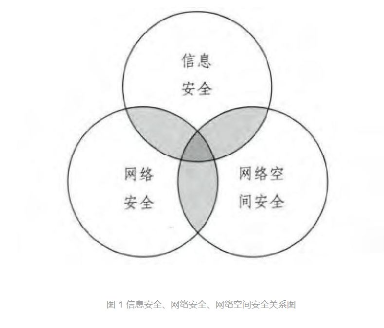

收录于合集

简
王世伟
上海社会科学院信息研究所
【 内容提要 】 本文论述“信息安全”概念的出现和发展,依据近年来全球信息安全领域的文献资料,并结合与之相关的实践活动,阐述“信息安全”、“网络安全”、“网络空间安全”三者的联系与区别。信息安全可泛称各类信息安全问题,,网络空间安全则特指与陆域、海域、空域、太空并列的全球五大空间中的网络空间安全问题。三者均类属于非传统安全领域,都聚焦于信息安全,可以相互使用,但各有侧重;三者的概念不同,提出的背景不同,所涉及的内涵与外延不同。厘清三者的关系,有助于在信息安全研究与实践的逻辑起点上形成清晰的认知,在信息安全的基础理论研究中形成业界内外公认的学术规范。【 关键词 】信息安全、网络安全、网络空间安全、信息安全政策、信息安全战略
一、 信息安全、网络安全与网络空间安全三者的相同点
1、 三者均类属于非传统安全领域。 较之军事、政治和外交的传统安全而言，信息安全、网络安全、网络空间安全都类属于非传统安全领域，是进入20世纪末特别是21世纪初以来人类所共同面临的日益突出的安全问题。2004年9月，中国共产党第十六届中央委员会第四次全体会议通过的《中共中央关于加强党的执政能力建设的决定》，明确指出要“确保国家的政治安全、经济安全、文化安全和信息安全”以及“确保国防安全”。2006年10月，中国共产党第十六届中央委员会第六次全体会议通过《中共中央关于构建社会主义和谐社会若干重大问题的决定》，再次强调了四大安全领域，即“确保国家政治安全、经济安全、文化安全、信息安全”。2012年11月，中国共产党第十八次全国代表大会的报告中，先后提到了信息安全、太空安全、网络空间安全。2014年2月，中央网络安全和信息化领导小组第一次会议进一步提出了网络安全的新要求。近年来中国与世界各国和地区组织签订的双边和多边的各类协议和发表的共同声明中，信息安全、网络安全和网络空间安全成为相互协商和共同治理的重要内容。
2、 三者都聚焦于信息安全。 信息安全可以理解为保障国家、机构、个人的信息空间、信息载体和信息资源不受来自内外各种形式的危险、威胁、侵害和误导的外在状态和方式及内在主体感受。网络安全、网络空间安全的核心也是信息安全，只是出发点和侧重点有所差别。
3、 三者可以互相使用，但各有侧重点。 信息安全使用范围最广，可以指线下和线上的信息安全，即既可以指称传统的信息系统安全和计算机安全等类型的信息安全，也可以指称网络安全和网络空间安全，但无法完全替代网络安全与网络空间安全的内涵;网络安全可以指称信息安全或网络空间安全，但侧重点是线上安全和网络社会安全;网络空间安全可以指称信息安全或网络安全，但侧重点是与陆、海、空、太空等并行的空间概念，并一开始就具有军事性质;与信息安全相比较，网络安全与网络空间安全反映的信息安全更立体、更宽域、更多层次，也更多样，更能体现出网络和空间的特征，并与其他安全领域更多地渗透与融合。
**** 二、 信息安全、网络安全与网络空间安全三者的不同点 ****
1、 对应的英文名称反映出三者的视角不同。 信息安全对应的英文是information security，网络安全对应的英文是network security或cyber security，网络空间安全对应的英文是security in cyberspace。从三者对应的英文名称中可以看出，“信息安全”所反映的安全问题基于“信息”，“网络安全”所反映的安全问题基于“网络”，“网络空间安全”所反映的安全问题基于“空间”，这正是三者的不同点。
2、 三者提出的背景不同。 信息安全最初是基于现实社会的信息安全所提出的概念，随着网络社会的来临，也可以指称网络安全或网络空间安全;网络安全则相对于现实社会的信息安全而言，是基于互联网的发展以及网络社会到来所面临的信息安全新挑战所提出的概念;而网络空间安全则是基于对全球五大空间的新认知，网域与现实空间中的陆域、海域、空域、太空一起，共同形成了人类自然与社会以及国家的公域空间，具有全球空间的性质。可见，三者的概念在安全的对象方面有所区别。
3、 三者所涉内涵与外延不同。 信息安全作为非传统安全的重要领域，以往较多地注重信息系统的物理安全和技术安全。随着信息技术的发展，先后出现了物联网、智慧城市、云计算、大数据、移动互联网、智能制造、空间地理信息集成等新一代信息技术和载体，这些新技术和新载体都与网络紧密相联，伴随着这些新技术和新载体的发展而带来的新的信息安全问题，形成了隐蔽关联性、集群风险性、泛在模糊性、跨域渗透性、交叉复杂性、总体综合性等新特点。在网络空间，安全主体易受攻击，安全侵害迅即发生，威胁不可预知，易形成群体极化，安全防范具有非技术性特点。如大数据在云端汇聚之后，就给网络安全带来了信息大量泄露的新威胁;物联网、智慧城市、移动互联网在提供高效、泛在和便捷服务的同时，也使巨量的个人信息和机构数据在线上不时处于裸露状态，为网络犯罪提供了可能。随着网络安全的发展，网络武器、网络间谍、网络水军、网络犯罪、网络政治动员等相继产生。不仅如此，网络安全和网络空间安全将安全的范围拓展至网络空间中所形成的一切安全问题，涉及网络政治、网络经济、网络文化、网络社会、网络外交、网络军事等诸多领域，使信息安全形成了综合性和全球性的新特点。以上这些都是以往“信息安全”一词所不具备的内涵或无法完全涵盖的，需要用“网络安全”和“网络空间安全”来表达。网络安全与网络空间安全形成了跨时空、多层次、立体化、广渗透、深融合的新形态，与其他传统安全和非传统安全领域形成了交叉渗透的联系，成为具有总体安全、综合安全、共同安全、合作安全性质的新安全领域。
与网络安全相比较，网络空间安全作为一个相对的概念，具有针对性和专指性，与网络安全有细微的差别。尽管两者都聚焦于网络，但所提出的对象有所不同;较之“网络安全”，“网络空间安全”更注重空间和全球的范畴。2011年4月，美国政府正式公布了《网络空间可信身份国家战略》，此战略阐述了美国政府试图在现有技术和标准的基础上建立“身份生态体系”，进而实现相互信任的网络环境，促进网络健康发展。2011年7月，美国国防部发布了《网络空间行动战略》这一战略明确将网络空间与陆、海、空、太空并列为五大行动领域，将网络空间列为作战区域，提出了变被动防御为主动防御的网络战进攻思想，推动了网络空间军事化的进程。在这一战略中所提出的五大战略倡议，包括确立网络空间的应有军事地位，进行主动防御，保护关键设施，防护集体网络，加强技术创新，使非传统安全的“网络空间安全”打上了传统军事安全的深刻烙印。可见，美国所推出的系列网络空间战略政策文件，实际上涉及了网络空间安全的生态环境问题，体现了网络空间的专指性，可以帮助我们认识网络安全与网络空间安全两者之间的差异。
**** 三、 案例说明
本文通过三个案例来进一步认识信息安全、网络安全与网络空间安全三者的异同。
1、信息安全（编者注，下同）。 中国古代边疆面临侵犯危险时，多在高台上烧柴或狼粪以报警，被称为烽火、烽烟、狼烟、烽燧等，春秋战国时期及后来历代修筑的长城即筑有烽火台。公元前400年，斯巴达人发明了“塞塔式密码”，形成了最早的密码技术，并据此产生了密文。注重高台、烽火的作用，以及使用密码等信息安全技术，这些都是传统信息安全的案例，具有现实社会信息安全的性质。
2、网络安全。 2006年12月，由澳大利亚籍人士阿桑奇创办的维基解密网站，目的是在全球范围内公开秘密信息，这些信息来自匿名的个人、机构，以及网络泄露的信息。该网站没有总部或传统的基础设施，主要依靠《纽约时报》等五家合作媒体以及数十个国家的支持者发布重大消息。2010年7月，该网站公开了多达9.2万份驻阿富汗美军的秘密文件，引起全球的广泛关注。这一案例说明，网络安全具有载体虚拟化、传播网络化、影响跨国界的特点，注重从网络系统软硬件的互联互通着眼，关注网络系统中的数据内容是否遭到破坏、更改、泄露，系统是否连续可靠地正常运行等。
3、网络空间安全。 2011年7月，美国国防部发布了《网络空间行动战略》，这一战略将网络空间列为与陆、海、空、太空并列的行动领域。这一行动战略与同年美国政府发布的另两个政策文件一起，形成了系列的网络空间国家安全战略框架体系，另两个文件分别是2011年4月的《网络空间可信身份国家战略》和2011年5月的《网络空间国际战略》。其中《网络空间可信身份国家战略》以构建网络空间安全、高效、易用的身份生态体系为目标，《网络空间国际战略》以塑造并主导网络空间的全球秩序为目标，《网络空间行动战略》则以形成主动防御和技术创新的网络空间主导地位为目标。这是网络空间安全的例子，具有网络空间安全在特定空间领域的针对性、专指性和相对性，注重网络空间中信息安全的全球治理方案和各类战略举措。
综上所述，信息安全、网络安全、网络空间安全三者既有互相交叉的部分，也有各自独特的部分(见图1)。信息安全可以泛称各类信息安全问题，网络安全可以指称网络所带来的各类安全问题，网络空间安全则特指与陆域、海域、空域、太空并列的全球五大空间中的网络空间安全问题。

（内容有删减，详情参见原文）
来源：中国图书馆学报2015年第2期
编辑：晞哲